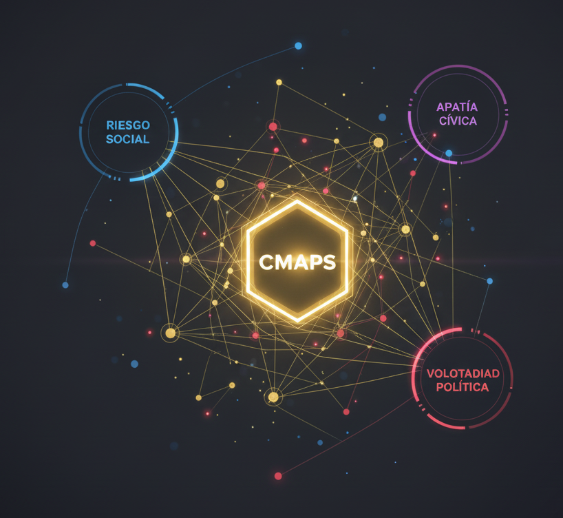

POLITEIA CMAPS: El Motor de Inteligencia Sistémica
Venta: Retorno de Inversión (ROI) y Estabilidad. La única plataforma que transforma la data histórica, el GAP y el riesgo social en una métrica única **(Score 0-300)** para dirigir capital y mitigar la incertidumbre nacional. El Score IRSO 0-300 es el subproducto que cuantifica el riesgo derivado de la robustez de Politeia CMAPS.
Demo Principal: Granularidad del Motor
Métrica Clave: Score IRSO 0-300

Cuantifica el Riesgo Integral Socio-Operativo.
Rigor en la Data Histórica

La base histórica (2006+) garantiza la solidez del motor.
RIGOR CIENTÍFICO: Metodología Comprobable y Auditable
Venta: Optimización de Recursos y Logística. Usamos la data Politeia (Voto x Partido, GAP, Abstención) y la fusionamos con variables operativas (Delito, Drenaje, Internet) en QGIS. Este proceso garantiza la **asignación quirúrgica de recursos de campaña** en los puntos de inflexión. La auditoría metodológica es inmediata.
- Integración Geocartográfica (CMAPS).
- Fusión de data electoral y socio-operativa.
- Detección de puntos de alto impacto (GAP).
Prueba de Integración Socio-Operativa
Incidencia Delictiva Agosto 2025: Capacidad para integrar datos complejos.
DATOS EN LA MANZANA: El Voto Duro en la Sección Electoral
Acceso al Dato Crudo y Análisis
Énfasis en Iztacalco/Neza: Prueba del descenso del dato al nivel de sección electoral.
Venta: Precisión para el Mando de Campo. Acceso directo a la base de datos Politeia (Votos x Partido). El demo de Iztacalco/Neza es la prueba de que el dato desciende al nivel de sección electoral, dando al coordinador la **información cruda y sin adornos para la movilización**. El dato no es solo una métrica, es la fuente primaria.
"El dato no está adornado, está listo para ser robado y analizado por el mando de campo."